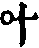
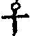
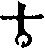
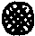
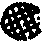

天界覺浪盛禪師全錄卷之十
法語
洞宗標正
師室中因諸門人侍立有僧出問洞上宗旨乞和尚指示。師良久。云會麼。曰不會。師曰你不如西天外道。曰某不曾問有言無言。師云卻又似西天外道。進云惟大慈悲曲垂方便令我得入。師云雪竇道邪正不分過由鞭影。如何是鞭影。進云莫是良久處麼。師云一翳在眼空花亂墜。進云外道見箇甚麼便得悟入。師云劫賊入空房。進云莫是疑根斷絕去麼。師云我說你不如西天外道。僧禮拜歸位。師乃顧眾云汝等還知价公始終機緣之妙密乎。公初為沙彌時念心經至無眼耳鼻舌身意處。輒自捫其面以問師曰我分明有。何故經言無。今人讀經能如此觸發天機即其師亦可使猛然自討入處乎。從此參方。首謁南泉。因為馬祖諱辰營齋。泉問眾馬祖還來否。公乃出曰待有伴即來。南泉是個通身手眼底漢。也只得道此子雖後生甚堪雕琢。公曰和尚不得壓良為賤。正如虎生三日。氣已食牛。尋常輩孰能當其爪牙。嗣于忠國師。無情說法話有省。已向荊棘林中能下足矣。及辭雲巖。問此去有人問百年後還邈得師真否。如何秖對。此正向沒孔鐵鎚重下楔也。不是此老大難酬他。乃良久云秖這是殺人刀活人劍。不妨利害。若是德山臨濟未免以棒喝用事。且道良久云秖這是還與棒喝有同別也無。公既已悟無情說法。到此如何又開眼尿床。沉吟不下。莫是識法者懼所謂承當個事。大須審細麼。秪這一劄愈見銀山鐵壁。大火聚中無你進步處。無你躲根處。無你轉身吐氣處。從此所悟所解底命根不容不斷。但不能向月明簾外[囗@力]地一聲跳出身裏之門而得全機大用。奮激不已。忽于過水睹影乃打失眼睛大悟前旨。正如德山於上座欲點那個心處不能出脫。乃以潭不見龍不現致個疑頭。迫得無路無門忽於吹滅紙燭處乃絕。後甦來大叫曰從此天下老和尚欺瞞我不得也。明眼人試看价公與德公悟門是何如哉。故公乃作偈自述悟證與石頭參同契之明暗妙協雲巖所付寶鏡三昧之渠我交參深相符合。即以重離回互而立正偏五位之宗旨。使公不於此得真正全機大用。何能自云切忌從他覓。迢迢與我疏。即有悟得自己若不見人以妙密鍵鎚打開九重錦縫。透過百種冤門。則大法不明。觸途成滯。終不能自我作主。折攝法界之群機也。正以理明而自神動。神動而自天隨。如聖人作而萬物睹。凡夫視為高遠之事。殊不知萬物皆備于我。我之聖心一發。則天地萬物皆隨我而全現也。人無聖心安得謂之聖人。此价公頓悟真我之大機大用。故能我今獨自往而法界皆全彰我之神用。此正以我能作主則先天而天不我違。後天而天奉我時也。知盧舍那佛頓出藏身則三身四智十方應化皆互為主伴交參。若但於頭頭上明物物上顯。不知向上尊貴一路自別。則不免於處處得逢渠即認渠為真我。卻又落在驢前馬後之階下漢。何能作主於法界攝重重涉入之三昧。又何能處處逢渠即是我處處稱尊即我是渠哉。師說至此驀呼云。大眾正當恁麼時。是個甚麼。畢竟洞山祖面目作麼生。眾愕然。師云打破鏡來誰炤燭。鶴沖霄漢出銀籠。眾禮拜。
師曰吾洞上之旨不特能會通五宗之秘。即如來一代時教之始終本末與儒道九流尊卑體用事理功位之名分。無有不收攝而闡發者也。此宗無語句亦無實法與人。正以明破即不堪。法死則不能活人。舞吹毛擊塗毒無論搆得搆不得。未免喪身失命矣。不獲已。立個正偏賓主玄要人境暗機圓相六義三關九帶十真等。已是刻畫虛空雕鑿渾沌。但先聖深恐法久成弊邪異繁興。若不為物作則立此宗旨則萬世何從揀別。真偽使此法眼妙心不昧滅哉。古人之立法立言正如大易之立象立辭也。使無大易之象辭則天下萬世何從而得天地造化之幾微。人物生死之性命哉。所貴於觀象玩辭而顯仁藏用也。人每以理為活數為死不知理雖活或以意見自用而反落於怪邪。數雖死能存法則。而可悟其天然有不得於象則求之于辭。有不得于辭則求之于象。或于言辭有盡而得象意無窮。是法住法位。世間相常住。不于此可悟耶。吾于疊三變五中見其象畫之奇偶妙協。乃知偏中至不可以兼中至而重犯兼中到也。何妨拈出以待神明之者。如太極舍四象為五位。即是河圖洛書以中五含十不過一奇一偶之參兩錯綜而成其中和位育也。六爻之偏正回互者。即奇偶之兼帶妙協也。蓋萬物無不負陰抱陽。陰不抱陽則孤而不產。陽不負陰則寡而不生。陰陽偏勝則散亂斷滅。何以承天命之化育乎。故聖人深幾裁成之揭其奇偶之樞機而變理其太過不及以致中和。則天地人物各自正其性命。此參贊位育之功能惟其善用九六轉變其乾坤造化所以為至神至妙也。重離如太極之含四象者。即五中之十如荎草之含五味金剛杵之具。五楞也之中一圈為天地人物之心即太極為重離含四卦之兼中到也。東方一圈即少陽之正中偏也。西方一圈即少陰之偏中正也。南方一圈即太陽之正中來也。北方一圈即太陰之偏中至也。覺範洪公以互卦為回互。以單卦為互疊先大過中孚而後。單巽單兌特一說耳。少陽少陰體尚未純。但能疊進而未可即變太陰太陽體已。至純但能變轉而不可復進。吾洞上借此配喻偏正回互。以用疊為三變盡成五。誰得此意象外之深旨乎。回互者如教中之回向也。內外上下因果本末皆各相含攝之謂也。或回正向偏以理奪事。則無事而不理。可奪色法以明心也。或回偏向正以事奪理。則無理而不事。可奪空心以明法也。或回正中事理之全體而來向全用。則事理俱奪而可即妙有以成等正覺也。或回偏中事理之全用而至向全體。則事理俱不必奪而可即正覺以成大化權也。或回此正偏事理之體用向此天然尊貴無著真宗全提法界。則向上兼中到又何言哉。重離六爻偏正回互疊三變五。天然妙協原非意見所能強為之分合也。此重離之偏正混融也。以重離初爻之奇疊上為。重巽下斷。如正中偏也。以重巽初爻之偶疊上為重兌。上缺如偏中正也。以本離疊上成巽兌為三卦則不可更疊矣。更疊之則又成一重離矣。既為重兌則當用變。變則當先從內卦之兌翻轉成巽合外卦之兌變為澤風大過則四奇在中。兩偶在初上如坎中之滿為正中來也。大過既成則又當變此內卦之巽為兌變外之兌為巽以成此為風澤中孚。則二偶在中四奇在初二五上如離中之虛為偏中至也。以四而疊變既盡則兼到自成中五耳。或謂正來偏至聚訟至今究何決焉。曰疊如二少變如二太。約幾易簡矣。舉二而參統之。如陰陽之藏太極如寒暑之藏天舉四而中五統之如太極之舍四象如天之四時蓋象數奇偶費隱先後可互徵也。吾概舉其綱幾。而變化在其中矣。正偏兼中兼何須重舉乎。寂然不動感而遂通。天下之故。所謂感為易體也。吉凶悔吝生乎動。不有感而動之則何卦爻之疊變哉。經中以應觀法界性。一切由心造。而心不動則十界聖凡之名相了不可得。有何四句可離。有何百非可絕。說個絕代靈心亦強名也。正以十界之機感乃應之。[○@(?/─)]正中偏者。以上黑下白為少陰兼少陽也。[○@(─/?)]偏中正者。以上白下黑為少陽兼少陰也。[○@●]正中來者以中黑外白為太陰之全體協太陽來也。[●@○]偏中至者以中白外黑為太陽之全用協太陰至也。兼中到者以全放全收其黑白而混融之。不可以黑白表顯名跡。到此俱化類之不齊。混則知處。不落是非。無敢和矣。此大總相一真毘盧華藏法界圓融行布不可得而互表互遮者也。大易以陽為奇為正為君。為白以陰為偶為偏為臣為黑。吾宗則借奇為陰為正為君為黑。借偶為陽為偏為臣為白所謂夜半正明為正中偏。天曉不露為偏中正。又不當執此以相反其奇偶也。引而伸之何處不具掃而置之原自不壞此後之說吾何能限。然寧有逃于中五者哉。祇如八八六十四卦中奇即此一奇偶。即此一偶奇偶太極即費即隱分之則大絕方所合之則細入無間。就中行布圓融彌綸一際。死不礙活。活不礙死。孰能分合此中之奇偶正偏渠我賓主哉。此惟親悟親證無我無位之真人入于剎那際無間三昧者。始能傳受此千聖不傳之秘旨也。
[○@(?/─)]正中偏者即君視臣也。以上黑下白而體尚與用分方將使合。如堯之聖君乃能求舜之賢良。是勞于求臣以盡君道。此所謂妙容雖不動。光燭本無偏也。亦謂君向臣亦謂父垂慈養子。亦謂主能接賓。
[○@(─/?)]偏中正者。即臣向君也。以外白內黑而用始從體歸方將得。一如舜之賢臣乃能求堯之聖明。是勤于事君以盡臣職。此所謂不墮諸異趣。凝情望聖容也。亦謂臣奉君亦謂子承歡孝父。亦謂賓能對主。
[○@●]正中來者。即君御極也。以黑在白中而體已成其用。如不顯惟德百辟其刑。此所謂妙德尊寰宇。高明朗大虛也。惟我獨尊故又謂之功無能與比。即篤恭而天下平。亦謂父全業付子。亦謂主能作賓。
[●@○]偏中至者。即臣攝政也。以白在黑中而用已成其體。如玄德升聞重華協帝。此所謂靈機弘聖道。真智利群迷也。率賓歸王故。又謂之共功同歸。至化即共樂無為之治。亦謂子全身紹父。亦謂賓能為主。
兼中到者。即君臣道合也。以黑白渾融而體用一無分別。如堯舜之揖讓德成舜先。賓能相續為主。而堯退位又作主中主。堯既不居正位。舜亦不居偏功。此所謂渾然無內外。和融上下平也。亦謂之功功是無功無不功也。亦謂之父子恩忘斧斫不開向上尊貴之正命食亦不取矣。此秘密藏千聖不傳豈言所可盡哉。
示普侍者歸圓通
予侍者鑑咦普子隨從九年。今命歸廬山因以一紙禮求警策。予曰知我平日痛為汝乎。你師解啣日。子嘗親依弁山寶壽諸知識咸器重之。丙子隨予於西陵李家宰諸公稱為英敏。予曰此子病不能愚。恐難善後及從歸壽昌闃然翁黃元公亦撫而慰之。予見其好勝喜名。輒露淺鮮益痛叱痛逐之。你師亦感泣不忍去。予主圓通你師以緣事攜你往粵禮曹溪祖塔。及歸以汝乞予曰大日不能承事和尚。此子樸實可代日奉侍。惟痛鉗鎚即日之受命也。後你師掩關福山。旋到雪峰出而歿於旅。次予時主鼓山命汝去茶毘其骨。歸壽昌普同汝師雖死予每以你師痛策汝。使汝勤勞忠心用命是應當事。但習氣不自嚴切。好刻責人。非惟參究不力。而心亦終日不快樂。你自視能如汝師之英敏乎。尚不能自善其後。汝如此資質可不深為自警而追思汝師乎。普因告欲閉關誓死心徹究以不負平日督責之恩。予因書此令從此去果能不忘督責之深痛自裁抑。潛自參究則何大事不發明乎。子深勉之無負始終之心也。
示真儀準禪人
古人參學必至於悟證有足以驚天地感鬼神而超超乎聖凡之外者。皆由最初發心為欲了生死正性命也。今人最初未有為了生死心。以故所參者是文字道理機鋒公案之禪。所學者是知識為人門庭施設之事。縱使參得學得秪成一箇無明業識虛憍我慢。以欺誑世人而圖名聞利養。為法門之賊。住其流弊又有不勝言者是何曾有求了生死之功行哉。此正如蠶之用盡心機。吐盡絲繭。適足為自己生死自纏自縛之計。為可悲也。真儀準子嘗親依予於圓通。別去參諸方尊宿。近復歸見予天界因追究其所以正吾前言所參學之流弊以自為有進。予深斥之必欲其以求了生死自悟性命為本則。其為人天軌範。皆悟證後之事也。因書以勉之。
示旌川慧生禪人
德山見僧入門便棒。臨濟見僧入門便喝。魯祖見僧入門便面壁。趙州見僧入門便云喫茶去。無業見僧擬問便云莫妄想。睦州見僧便云現成。公案好與三十棒。或纔入門便捉住云速道速道。擬對即推出去。此一等老古錐刺骨刺髓徹困為人。若纔擬議便墮坑落塹陷身死漢無出頭路矣。那堪更踏步向前。逐語生解打葛藤弄鬼眼睛。問如何承當。如何透脫。乃至如何參究。如何下手。如何看話。如何起疑。如何進步轉身。如何出言吐氣。豈但白雲萬里。枷鎖千重也哉。若不恁麼又如何始得箇入處。又如何得出離生死。悲哉。胡餅討甚麼汁。雖然到遮裏也須是箇真正為生死底斬釘截鐵漢子始有箇趣向分。不然總恁麼縱汝意識。從世諦流布去孤負天下人。寧有限量哉。慧生禪人求予指示已是要教棒折如何又恁麼放行。山僧也是慣向泠灶裏下火。不免將錯就錯。或死灰裏爆出一粒豆也不可知。
示郝子荊居士
新安郝子荊居士才奇志異。絕侶孤風常參諸方獨折節於三峰藏和尚。因游戲于頂日問石二公之門一日訪予於長干。一見傾倒。因出藏公父子所示參禪須參宗門之句。其法語反覆拈提皆足開發人知見。予閱畢。居士禮拜求一語以相激揚。予呼曰居士秪遮一句作麼生。士曰不會。予曰好箇金剛圈棘栗蓬。士擬議。予展開兩手。士以手來摵。予即劈面一掌。曰遮老賊。士笑而退。予曰蹉過了。士復禮請于指示。予曰我宗無語句。亦無實法與人。或不得已一語一默一作一用一棒一喝一指一示。是皆欲人直下了然于心。絕未嘗以語默作用棒喝指示及種種言句機鋒為宗旨。令人參究也。即靈山會上迦葉見佛拈花而悟。阿難聞倒剎竿而悟。亦何常以拈花之機倒竿之句而參悟耶。正以後世學人根性遲迷未能直下豁徹。因而返自參究以至苦勞積久歲月。或後遇師友機緣感觸而後開悟乃知從前種種言句機鋒等皆是直指人心見性成佛之妙。其為方便接引初心入路。原不執一也。辟如世間有欲見主人者。或了無一語直入堂奧而相見。或通謁者而後相見。或投名刺書柬而後相見。或借親友引進而後相見。或值門閉乃以拳擊手拍瓦敲口叫以至罵辱激憤始聞門而出相見。或主人畏避犯法事情官府讎家擁兵仗困繞其屋宅搗其門庭搜其藏匿生擒活捉而後相見。此皆因其主人事勢親疏緩急不得不如是。非先必定有如此種種之法也。雖求見之法種種不同而所以令主人相見之旨豈有異哉。後世師法不妙根性不齊。不知從上直指見性之旨。徒以語默作用棒喝指示及種種言句機鋒以為一定宗旨。得非深昧直指當下之旨。執指為月也哉。自拈花倒竿投鍼示相以及廬陵米日面佛麻三斤乾屎橛青州布衫重七斤。十八女兒不繫裙。與三玄三要主賓炤用君臣正偏。三句一鏃九十七種圓相等神變不測。是皆透出我本來宗旨之方法也。若但以名相而求語句而討。不明就中方法所以得相見之意。何異執敲門瓦子而不打開大門。安從得見主人之面目乎。以是後世不繇自己直下發明乃於古人言句機鋒分別計較穿鑿扭捏。支離破碎陷墮識情不幾誤入邪外稠林而不可救拔也哉。汝正骨人發心直須透破了擔荷調御之任。不須更作廋讔相撮弄也。珍重。
叢林藥石法語
古之禪林號為百怨門。要人於千不自繇萬不自在中煆煉出千得自繇萬得自在底三昧來。所以始終有大受用。將來亦為得人若參禪人有一法不能透。有一事不能為。有一人不可與。有一處不可居。又安得向異類行而變化其異類哉。吾嘗曰若叢林有一等人收拾不得。未足為通方叢林。若衲子有一叢林居住不得。未足為通方衲子。人生之器量深淺於此可以見矣。今有一等說我來親覲善知識。元為向上大法。豈來此修苦行習禪定哉。若夫堂外作務從來不慣。也沒那心去做。禪堂曾坐過來也沒心更去受職事人瑣碎規矩。我有個絕好規矩法度。他又不肯把職事與我當。我看那一班人也沒幾個似我遮般有開發底。不是十二點底斗子。便是攢死蛇底痴人。必須與我一個小房但要明窗淨几。文書紙筆。幾味茶果。可以點心。或看語錄。寫草字。或做些詩偈歌頌。或困倦時稍睡一覺。同參道友三五人。常著幾個轉語。論幾則公案。吃些茶譚些語。或簡點諸方。或議論時事。或笑口拍掌。或揚眉吐氣。亦不負我等有方外風味。若不如此。豈肯蹐蹐跼跼。如那一等不曾大有省發底。終日打樁搖櫓如繫驢橛子如三家村書地相似叢林之規矩法令元為彼一等初心行人嚴設。豈可加我通心之士。又有一等素出頭者。曰我非為參學求依止。我看彼會下無人屈為輔弼。特地裏扶持他出世為人。乃至為他代筆代座。又豈可不破格以禮遇我。嗚呼。你真是其人豈特明窗下安排。當果熟香飄龍天將自推出。也豈可強自炫暴乎。若秪如是狂妄過高。則二祖立雪斷臂百丈不作不食。溈山種畬插鍬。雪峰三登九造。葉縣擯叱浮山。種種為法忘軀。沉陸下賤如龍潛九淵者。皆所謂十二點斗子之活計也。又何處有今日之事哉。佛法宗風自此掃地。魔崇妖孽自此塞天矣。可勝歎哉。又有一等自謂我特來親依善知識為決擇生死偶遇知賓行人或侍者同事有一言稍拂其意。即時捲單便行。心憤憤口悱悱。不勝訕謗知識毀罵叢林。而終身含恨。雖過門亦不入也。嗚呼。如世間有真決科秀才。因學宮門子一言不合即將巾衫送還宗師。有是事否。真為生死人正要將此身心性命入大冶洪爐煆煉盡無始劫積習業識。鉗鎚盡無始劫生死命根。豈肯包藏禍心蓋覆毒種為自刑自害之人哉。又安肯取一時之利便造萬劫之迷坑而不求自出哉。又況古佛大士尚欲示同凡夫入異類中行同事攝示種種功過為人天標榜。今為生死垢重之人于生死性命絕無一毫解脫又安能為人與為將來人之眼目乎。吾嘗云欲向千人頭上坐。必須萬人腳下眠。欲向高高峰頂立。須向深深水底行。欲為尊貴中之尊貴。須為卑賤中之卑賤。善游魔界。乃真游佛界。善入五陰乃真度五陰。今人未能發一智消一惑。行一非常之事。安有非常之果。嗚呼哀哉。我嘗見許多英靈衲子遭此惡疾。遂致終身自棄。不惟不能成人。末後業報苦果有不可勝言者。吾深有感于此。故不惜口業為汝等先進此一服良藥而已。惟不我吐。法門幸甚。
復示圓覺化上座
昔普化沿途掣風顛。遇巡街御史出隸人喝道而行。普化攛向道前作咄咄聲。御史呼隸捉下打五棍。普化曰似則似是則不是。復欣然[彳*昌]徉而去。山僧嘗問諸學人。且道御史賞罰分明否。普化有出身路否。似則似是則不是。一敲一唱妙密希奇。向遮裏覷破真可入如幻解脫法門也。今上座到處唐突不妨衝流度刃。何以怪人呵叱驅逐乎。巡街御史與我知賓職事還有同別否。你果能如普化當呵呵大笑不敢以己妨人。不見無厭足王之門庭而斬首刳眼支解眾形。未嘗以身語意業惱亂六道群靈者乎。又不見寒山拾得放曠不羈每遭人叱逐自撫掌笑傲打鎖敲枷。又何嘗以人不知而自慍怒乎。必欲使人禮敬不敢怠慢則自當循規蹈矩周旋上下所謂機貴回互不敢觸犯鋒芒也。今既不能入荊棘林。游獅子窟。如裸形之人責人不以禮貌。又如賊兵之專以放殺擄掠為事。卻怪人以刀杖禦暴。即世諦中亦無是事。況我祖宗門下劍戟縱橫特欲破除學人之偷心妄法哉。我亦知上座是學脫略不羈之人。但可恣意於艸昧荒疏之外。何可放縱於規矩法度之中。如上座前日謁顓愚大師。唐突無禮。且輕擊其背。大師以不采無窮。你自納敗闕。若使諸方。拄杖打折不放你在。何可以善知識勘學人之機而倒用於善知識之前哉。你既如此行事。當盡天下無措足之地矣。還敢大言世人昧於名相而不知超略幻惑。豈非當局自迷者乎。
示石潮寧西堂法語
吾宗末裔傳至少林金沙太混。若非吾廩山翁于宗鏡書祖披出純精。別行一路。幾于人天冒昧。何能迴拔今時哉。篤生壽昌老祖得無師智。掘出大好山中掀翻黃龍頭角。正是胸中迸出始能遮天蓋地也。及接我東苑先師。便驀地推下險坑。使自跳出捉敗遮老漢莫作怪即杖人撞開祖父之門。全是赤身挨白刃。以故生平不拘拘于三玄甲冑五位鎗旗。別施符劍八面破敵。今時之弊正坐在各執名器。不能神其殺活。終屬濁智流轉。不鑒溈仰雲門法眼之後。因何而自絕乎。吾子始于太平棒頭得火燒裙帶消息。今復來此烹煉。自應如九轉神丹變化不測。異日大起吾宗。則皋鶴之聲光自遠矣。子當慎之。